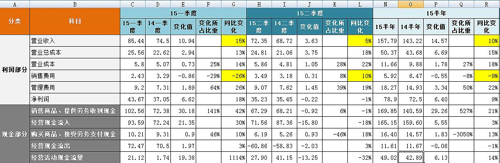
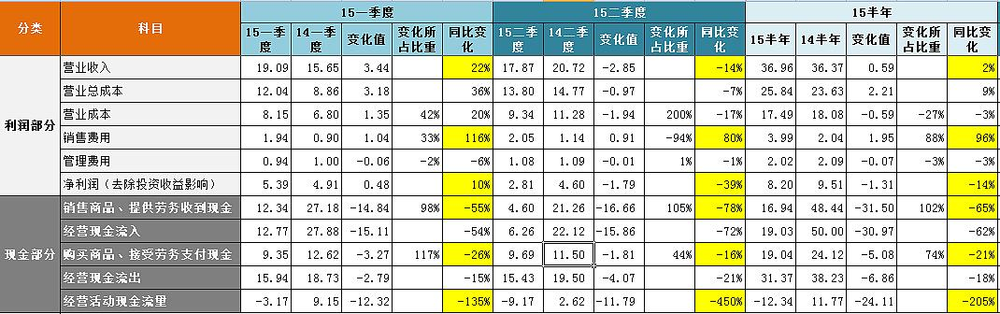
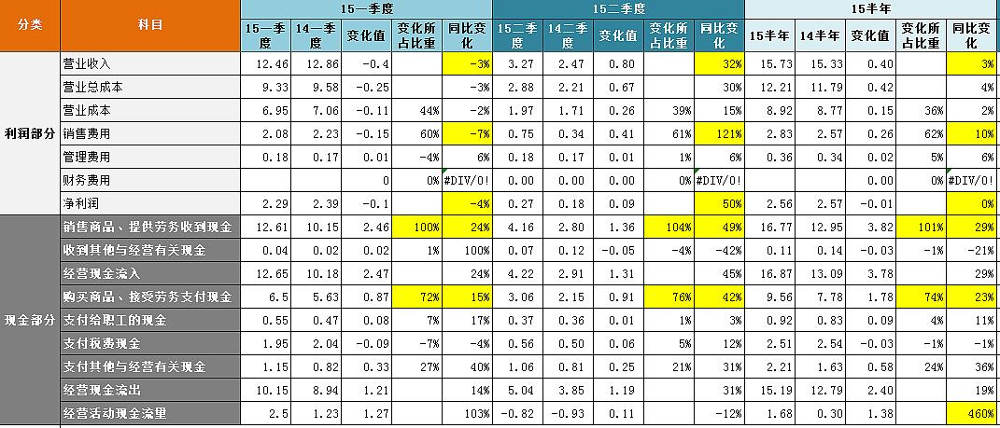
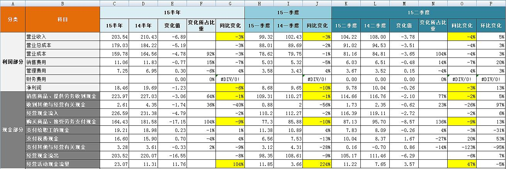

villike的雪球专栏 |
【贵州茅台】2015半年报分析

一、营业收入一季度、二季度、半年同比变化为15%、5%、10%，从预收账款或应收票据角度进行调节以后的真实收入来看，分别同比变化为55%、15%、36%，虽然二季度增速明显放缓，但是茅台的增长依然强劲，反观其他白酒企业或下滑或增长乏力的半年报，茅台在这一轮行业大调整中已经完全站稳了脚跟，并延续了机器般的成长，这一点其实从渠道上也有显示，超市里面的茅台生产日期一直都是近期的，价格则一直稳定，未曾出现倒挂，最近甚至有明显上涨的迹象，而且让人欣慰的是，在这一轮调整中，茅台不光在动销上面率先走出了迷雾，而且在价格带上，已经清晰地与五粮液、1573等竞争单品拉开了距离，这不是企业控制价格那么简单，过去几年高端白酒借助三公消费这场东风，涨价的幅度简直可以用失去理智来形容，而经过两年的洗涤，只要号称自己是高端白酒就可以随意涨价的时代已经过去，如今茅台这个平衡点的价格与竞争对手的价格差距，就是茅台清晰的竞争优势：源自于高品质产品和消费者高端白酒心智资源独占的护城河，应该说在这一轮调整过后，茅台的护城河更为宽广了，因为消费者意识到了茅台不是靠腐败而成功的，价格下降也让民间需求尝到了飞天茅台的甜头，而且如今的价位，早已经是普通消费者可以接受的高端白酒了。
关于茅台的强劲需求，我在过去两年深有体会，工作原因我会接触到企业的高层，这些人现在到了饭桌上，只要喝酒，首选都是茅台，我曾经在饭桌上问过某品牌东北大区的总经理为什么总是喝茅台？五粮液也不差啊？他的回答让我印象深刻：“都说茅台喝了以后不上头，不头疼，我们这个年纪的人了，要注意身体。”说完后，他停了一下，又补充了一句：“再说了，现在老伙计们在一起喝酒，谁愿意为了那一两百块，去喝便宜一点的酒？这个价钱的茅台，我觉得挺值的。”这两句话看似简单，实际上蕴含了茅台强大的优势：第一，产品本身品质好；第二，在消费者心目中形成了心智资源占领；第三，是一种面子型消费品。这三点是不得了的，这种性质的消费品一旦出现，就是非常好的投资标的。
二、扣非净利润半年同比变化9%，主要是成本上升，成本方面，营业成本在二季度有比较明显的上升（18%），和营业收入的5%不成比例，年报给出的说法是原辅料价格上涨，从细分产品来看，主要是茅台酒的成本出现了21.7%的上涨，茅台的主要原材料是高粱等谷物，就算偶尔有价格波动，对于茅台这种毛利率90%以上的企业来说，也不算什么大问题，只要不要持续恶化就行。
销售费用在一季度出现大幅下滑，二季度略有增长，半年变化-9%，从销售费用细分情况看出，广告及市场拓展费用甚至下滑更多，-15%，-15%的广告拓展费用，对应36%的真实营收增长，不得不感叹茅台强大的品牌拉力，如果自己要开一家公司，在广告费这个维度上，最好的选择也就是打广告的钱越来越少，却不断有上门要买的顾客了吧。
管理费用半年同比变化为22%，从细分费用中看到同比增长26%，有一点点的高，但是对比起36%的营收增速来，还是可以接受的。
三、经营现金半年同比为14%，流入和流出变化分别为3%和-1%，两者中销售现金和购买现金同比变化分别为21%和13%，都基本是正常的，对应到资产负债表中看看会涉及的科目，预收账款、应付票据等都都已经谈过了，其他也没有什么特别的变化，就不再一一赘述了。
总的来说，从财报层面，茅台的这份半年报可以用“机器一般的增长”来形容，在白酒业深度调整这两年，茅台只是略微放慢了增长的步伐，却几乎未曾停下过脚步，在其他酒企刚刚有所稳定的时候，茅台已经又迈开了快速增长的步伐。
从竞争优势层面，在经历这一轮行业洗牌之后（尽管现在还没有结束，但是茅台已经率先走出来了），茅台的护城河更加强大了，因为茅台成功地证明了自己产品的强劲需求，并以与竞品拉开的价格差距，进一步在消费者心目中占据了高端白酒代名词的心智资源，最关键的是，这种价格差距是市场自发拉开的，而不是厂家有意调整的结果。
最后再说两句，其实这份文章半年刚出来的时候就已经写好了，之所以没有发，是因为一方面茅台的财报太简单了，几乎没什么瑕疵，也没什么特别需要分析的地方，一如既往地好；另一方面，茅台这家企业确实没有太多可以分析的地方了，一切都显得那么简单而自然，所以我也偷了懒，觉得没必要那么着急发出来了。
还有个事情，这份财报出来的那个晚上，我以为市场自然会做出反映的，我当时以为第二天茅台就算不涨停，也会大涨，结果第二天股市大面积上涨，我的自选股里面只有茅台一家是下跌的，也是大跌眼镜，仔细想想，也许是没有“达到市场预期”吧，这个事情更让我庆幸了自己尽早弄明白了投资应该看得更长远一点，就算茅台每年只有这个程度的增长，已经超出当初我估值时的预期了，所以，让下跌来的更猛烈些吧。
【泸州老窖】2015半年报分析及竞争优势思考

一、营业收入一季度、二季度、半年同比变化分别为22%、-14%、2%，二季度下滑还是挺明显的。白酒企业由于预收账款较多，对于报表的调节空间比较大，所以需要用营业收入+预收账款增加额来金丝判断真实收入（销售现金+应收票据增加额也是基本类似的），从这个口径来看，一季度、二季度、半年的营业收入同比变化为15%、-55%、-23%，显示二季度的真实收入下滑严重。
打开来看，占比16%左右的高档酒增长12%，但毛利率明显下降，接近5%，说明1573虽然在逐渐回暖，但是产品的竞争力有所下滑，应该说1573还在寻找自己的定位和寻找量价平衡点的过程，我所在的深圳地区一家核心超市里面的1573还是1300多的价格，渠道库存恐怕还没有那么干净，1573要迅猛增长的可能性，个人判断不会太大；
中档酒目前占比29%，营收增长达到明显的27%，但是14半年报显示，中档酒是下滑了接近50%才到了8亿多的量，今年也只是回到了10亿，似乎空间也不是很大，但是，注意到中档酒的毛利率提升了13个点，而且14年此指标也是增长的，说明中档酒（窖龄、特曲）的竞争力确实是在加强的，这恐怕与对窖龄酒的广告投入是分不开的，销售费用一季度、二季度、半年的同比变化为116%、80%、96%，几乎是成倍在增长，看报表附注，广告费从去年的0.4亿变成今年的2.12亿，翻了5倍多，这2亿的投入拉动了中档酒2亿左右的营收，等于提升了产品知名度，但是很明显，这样的投入产出比是不可持续的；
低端酒这两年一直是老窖产品的基石，哪怕在这次下跌之后，依然有53%左右的占比，跌了10%，而且毛利率也在下滑，中国人喝白酒是一定会朝着少喝酒、喝好酒这个趋势演变的，这是个不可变的趋势，当然在这个过程中，有特点、区域市场认同度高的产品确实还会有比较好的增长，比如前段时间看老白干的半年报，印象中增长还是不错的。
这里就又要扯到泸州老窖一个老生常谈的问题，就是产品杂乱，尤其是低端品牌，最近有消息说开始整顿低端酒，年报里面也提出要走“大单品”，这当然是好事，几乎所有人都会认同：产品瘦身对于这家企业来说是非常重要的，但我最近在思考这样一个问题：我总是在关注瘦身这个目标或者说行为，却忽略了可能的结果，大单品“有可能”在中端酒（窖龄和特曲）上实现（虽然我的理念一直都是不相信“美好的未来”，但是毕竟老窖已经从广告等角度在做了，尽管坦白说，没有让人觉得惊艳的感觉和效果），但是老窖的低端酒，瘦身以后，要剩下的大单品是什么呢？这可是占据营收半壁江山的一块肉啊，瘦身、大单品听起来固然好，但是出路在哪里呢？目前我还没有看到。
二、扣非净利润去除投资收益比14年多出的2亿，一季度、二季度、半年同比变化为10%、-39%、-14%，同样是二季度下滑严重，从半年来看，变化所占比重最明显的还是销售费用，前面已经谈过。管理费用一季度、二季度、半年的同比变化为-6%、-1%、-3%，其中的细分项职工薪酬涨薪幅度为5.4%，虽然营收表现一般，但是对于管理人员工资这种刚性成本，这个涨幅也算可以接受吧。
三、经营现金的变化非常大，在流入大幅减少62%的情况下，流出减少只有18%，造成-205%的经营现金流量，可能影响到的几个科目一一来看：应收类大致增加了14亿，14年为-8.3亿，都是银行承兑汇票，问题不大；存货15年基本保持不变，14年增加了4.1亿，应付类（票据、账款）15年变化1.69亿，14年变化-4.8亿，预收款15和14年变化分别为-12.2和-2.4亿，综合14年和15一季度预收账款情况来看，老窖的经销商现在打款的积极性不高，甚至有降低的趋势，模糊记得有球友讲过老窖经销商模式的改变，不知道预收款变化和此有没有关系，如果有球友清楚的，还请不吝赐教。
总结一下，二季度的营收相当糟糕，高端爆发增长的可能性还不大，中端增长的路径目前看起来不可持续，低端开始萎缩，同时想要走大单品路线，但是路线依然不明朗，从这三方面来看，短期内老窖的营收提升会是个大问题。后续需要关注1573稳定情况、广宣费用对于中端酒的拉动效果（其实是推动）、低端酒大单品的出路走向，另外需要研究经销商态度变化的内在原因（若有的话）。
除了报表的分析，我还有一些关于企业未来竞争优势的思考。
必须要承认，企业一两个季度、甚至一年的财务数据不能说明太多问题，我同意投资是应该着眼于企业基本面、尤其是企业的竞争优势，但是财务数据是一定要关注的，哪怕是季报数据，因为第一，投资是一件躲避失败优先于追求成功的事情，如果企业的财务数据连续两季、三季的出现恶化，是绝对不能采用鸵鸟战术、一心期望企业就一定会好起来的，这里就是逻辑思维和现实主义发挥作用的地方，现实的商业世界固然不会完全按照我们的逻辑来发展，但是一家企业的发展如果连逻辑上都找不到出路的话，单纯相信“一定会好起来的”，有掩耳盗铃的嫌疑，所谓的“投资就是找到一英尺高的门槛”，我想已经把门槛提高到了二英尺——虽然没有一目了然，但经过简单的逻辑思考，是有答案的——如果要再难一点才能找到答案，那这样的投资，个人觉得还是不要去挑战了吧。
回过头来说老窖这家企业，她的持续性的竞争优势究竟在哪里呢？我过去的理解是独占性资源——老窖池带来的产品差异（老窖中端甚至低端的酒，在浓香里面鲜有无出其右者），在我看来，老窖现在面临一个其实有点尴尬的问题，就是中低端酒长期必定难有突破的消费趋势，这一点却不是无解的，往行业内看，有老白干这样的聚焦中低端却依然在强劲增长的企业，往行业外看，美国历史上最赚钱的股票是一家烟草公司，而烟草的需求在这几十年时间里面是一直在萎缩的，关键在于行业集中度的提高，而且不需要额外的投入，再加上投资者不待见导致PE长期偏低，其实我觉得要搞清楚老窖究竟未来行不行，应该问自己这样一个问题：假设中低端白酒行业未来开始一直萎缩了，老窖是否能够获取更多的市场份额？
这个问题我的看法简单点说是这样的，单靠自由竞争，老窖这种在很多行业会获取市场份额的大企业（因为可以摊低成本）处在白酒这个行业里，很难有效提高市场份额，之所以这样说，是因为白酒这个行业的两个特点——进入门槛很低、当地政府扶持，白酒这个毛利率30%都算低的行业，再加上进入门槛不高，很容易吸引资本进来，虽然没法撼动老窖这种有窖池、品牌优势的大企业，但是赖在这个行业不走，经济上来讲难度是不大的。
所以，老窖要想获取更多市场份额，只能主动出击去抢别人的地盘，靠什么呢？产品吗，老窖的酒质已经说过没问题了，但是这么多年一直都是这样的酒，也不可能突然间比别人高出一个档次；品牌溢价这个倒是有一点可能，毕竟是有产品品质作支撑的，这一点在产品体系梳理清晰以后，也许能做出一些品牌溢价出来；渠道方面老窖的渗透也算不错了，如果能产品体系梳理清楚，在渠道方面的表现应该也会好一些。
所以总的来说，我能想到老窖未来的竞争优势，是基于优秀产品品质的产品体系、营销体系的提升，目前已经在梳理产品，并在广宣方面做了一些努力，可以等等看吧，我突然有点感悟，就是我过去所想的老窖的窖池、产品品质等竞争优势确实存在，但这些已经基本都反映在过去十年老窖的快速成长里面了（我13年对比了这个行业几家企业十年的核心数据，其实当时最出色的不是茅台，是老窖），其实这十年都不能完全归功于老窖的这些优势的发力，行业的成长周期以及1573的成功（其实1573的成功有产品品质的功劳，但是行业高端酒趋势和营销——1573这一仗，老窖打得还是很漂亮的）占据了很重的一笔，但是未来要靠什么在存在需求长期萎缩的环境中生存、甚至壮大，是每一个老窖的投资者都要深思的问题。其实这个问题，可以从反面也考虑考虑，老窖未来是否存在大幅下滑的可能性？高端可能性不大，高端酒的需求、以及1573在浓香中的品质决定了高端在这种历史低点向下的空间非常小；中端营销会非常重要，老窖的中端酒竞争力真的很强，就看产品体系梳理和营销了，这一块有一定的风险，是最考验老窖管理层能力的地方；低端老窖要从原来的“苍蝇再小也是肉”的模式转变为依靠单品的模式，还是充满了变数的，前面已经分析过，就不再重复了。
老窖未来的路很可能不会一帆风顺，前路茫茫，身后又有可能失败的陷阱，希望老窖能早日找到突破口，像黑暗中的灯，照亮前行的道路。
【泸州老窖】竞争优势再思考 2015.09.09
前段时间借着分析泸州老窖2015半年报的机会，我写了一些关于这家公司竞争优势的思考（网页链接），与其说是思考，更像是自己的一些问题和困惑，而且是在投资这家公司两年多以来，慢慢积累起来的一些困惑，因为不知道答案和出路，所以自己也挺迷茫的，但是我也很开心，终于把自己的困惑系统整理了一次。最近这几天，闲下来的时候我也会去琢磨这些问题，今天把最近的思考记录下来，供日后查阅。
在那篇文章中，我对于泸州老窖出路的困惑主要是：在未来最坏的背景下，即中低端白酒需求持续下滑多年的情况下，泸州老窖要想增加企业价值，就要提升市场份额，从逻辑上是否可能做到？从主动获取和被动淘汰两个方面来看：
行业集中度难以有被动淘汰式的提高，原因有四：
- 白酒进入壁垒低（1）；
- 税收丰厚受到地方政府扶持（2）；
- 白酒地域化消费现象明显（3）；
- 利润率较高造成不易亏损（4）。
泸州老窖若想主动出击提升市场份额，目前也没有显而易见能够成功的出路，主要思考角度有三个：
- 产品品质已经反映在过去几十年的增长中，考虑到扩充产能和工艺限制，短期内提升产品品质可能性不大（5）；
- 品牌有一定可能，但前提是清晰的产品定位、宣传以及合理的产品结构（6）；
- 渠道方面，老窖的各种渠道渗透已经做得不差，产品体系的梳理也可能会带来渠道的表现出色（7）。
另外，我也试图从反向的角度去思考，泸州老窖的收入有没有大幅下降的可能：
- 高端酒大幅下滑可能性不大，因为稳定甚至有可能上升的高端需求以及1573在浓香里的品质优势；
- 中端酒的产品定位、营销、渠道会非常重要，目前在采取大量销售费用拉动销售的方式，是否能够尽快形成品牌拉力还未知（8）；
- 低端酒要转换为大单品模式，听起来是好的，但是未来大单品是什么，好像没有看到清晰的出路。
（以下数字对应前文括号中的数字，文字部分是相应的思考）
- 确认：白酒的进入壁垒是很低的，家里农村人经常有人自己酿造白酒，把品质放到一边，单纯做一些普通人能喝得起、口感还算凑合的白酒，不会像造导弹一样那么难。
- 部分确认：地方政府扶持这一点，只能说未来有改观的可能，因为虽然现在是鼓励提高产业集中度的，但是我们都清楚，地方和中央的博弈关系决定了只要这个税收和产值是算到地方的，这种扶持就很难结束。
- 确认：白酒的地域化消费有多明显，问问各地的酒友就会有感受，再看看中国从北到南，每到一个地方你看渠道里铺的货，有多少是纯全国性品牌？大多旁边都会放几款本地酒，而且最关键的是，喝白酒这个事情，除了喝高端酒（全国就那么几款），我们都知道是有“情怀”在里面的，而思乡和爱家这两种情怀，就决定了本地的酒就是比外地的选择优先级更高。
- 质疑：这一点从表面上看，白酒动辄50%以上的毛利率是很丰厚，但是仔细想想也不太对，对于地方小品牌、甚至一些小的作坊来说，30%的毛利率应该算是不错的了，其实泸州老窖的低端酒差不多也就是这个毛利率，再扣除各种费用，其实剩下的利润不多了，但是，问题在于这个行业哪怕就是不景气，没什么刚性成本，顶多就是少雇几个人的事儿，酒窖又不会减值，造出来的酒卖不出去多放几年，等到行业有了起色再来卖，也许更好卖。还有一个现象我注意到，行业不好时，哪怕是知名酒企，也有亏损的时候，这个事情其实还是挺有意思的，虽然我没有去细究，但是至少说明不是旱涝保收的，但是总的结论，我认为白酒行业如果常年不景气，是有可能倒闭掉一批小企业小作坊的，会有一些行业份额贡献出来，但是这些份额还是会被区域性的优质酒企抢走一些，真正到全国性品牌的，恐怕还要打个折扣。
- 确认：这一条不用说了，很明显的事情。
- 部分确认：老窖的产品结构和大单品路线问题，大多数人都认为这是个很大的问题，我也同意，目前来看，如果做成1573、窖龄、特曲、头曲、二曲，还是有较为清晰的结构的（窖龄我没有太了解过，30年和特曲会不会有一些在消费者心智中重叠的地方不清楚），之前担心的低端瘦身以后大单品到底是什么，我想就是头曲和二曲了，只是这两个单品的名字和营销方式可能就要变一变了，洋河的营销方式有很多值得借鉴的地方，就不一一说了。
- 质疑：渠道这个问题涉及到了经销商模式的改革，最近也看了一些这方面的观点，总的来说，以往老窖中高端采用的柒泉模式在行业景气周期管用，但是在行业不景气周期会影响发展，因为过去货好卖，柒泉公司打来大量的预收款，渠道库存积压，价格也在上升，但是在行业调整期间，首先要去库存，经销商不愿意打预收款，就造成老窖的财务报表难看，最关键的是，老窖管理层也很难知道去到里面道理有多少库存，这是第一个问题；
第二个问题，景气的时候，产品价格是稳定甚至上涨的，但是在不景气时，为了清理库存，经销商就可能会以极端的价格来处理产品，很容易造成极端的恶性竞价。总的来说，过去的柒泉模式在行业景气周期里面，相当于招兵买马为自己打仗，就算互相有点小矛盾，但毕竟大家都是赚钱的，但是在不景气的时候，就变成了外要应付竞品，内里面还要同一品牌产品大混战，最关键的是，厂家对于产品的社会库存和价格控制由于多出了个柒泉公司环节，这种控制力是被削弱的，而新采用的成立品牌销售公司的做法，更有利于厂家加强对于渠道、库存以及终端价格的管控，这对于实行大单品路线来说，是更好的模式，只是这同时也要求了更好的管理和营销能力，两位销售出身的新老总在这方面，希望他们能够做出更好的成果，从投资的角度来看，这种调整很明显是好消息。
- 部分确认：上篇文章提到广宣费用的增长对营收增长的拉动不强，这一点有球友提到是因为过去柒泉公司帮助承担了老窖的广宣费用导致的，我不知道这个因素所占的影响有多大，但从我过去统计的几家主要酒企的广宣费用占营收的比重来看，老窖09-13年的这一指标的平均值是1.6%，而茅台、五粮液、洋河、汾酒的平均值均在3%以上，部分说明确实是有一定影响的，但问题在于，就算这一观点是对的，那就意味着老窖以后的销售费用将会始终高企了，这可不是什么好信号。
总的来说，上次文章中关于泸州老窖竞争优势的大多数观点，我认为是可靠的，有几个点进行了重新梳理（前文已经都提过，就不再加粗了，但是这几个观点是这篇文章结论的核心支持论点）：
- 行业利润率高导致难亏损对事实有所夸大，事实更可能是行业不景气期间，会有企业亏损，部分甚至会退出行业竞争，但是空出来的市场份额会被区域强势企业和全国品牌共分享；
- 低端产品大单品短时间内看不到出路，这一点是因为我简单地忽略了头曲和二曲这两款产品，但是很明显，这两款产品要想成为大单品，“包装”和营销上还有很长的路要走；
- 渠道模式的改进，除了产品体系的梳理带来的动因外，目前老窖已经在中高端试行新的渠道模式了，从理论上讲，新的模式是更适合目前的产业环境的，只是对于管理能力提出了更高的要求；
- 广宣费用对于营收的拉动力度，上一篇文章我只是简单提到了力度不足，没有更深入的看一看，哪怕广宣费用的飙升一部分是因为经销模式改革，广宣费用的高企恐怕都会是未来的常态了。
这样分析下来，会有明显的感觉：泸州老窖是“有希望的”，只是这些希望目前还都只是“可能性”，对于那些非常看重确定性的投资者来说，恐怕还需要更有力的证据。
【承德露露】2015半年报分析 2016.08.20

一、营业收入半年、一季度、二季度同比变化分别为3%、-3%、32%，虽然二季度只有3.27亿营收，和一季度的12.46比起来下滑很多，但这是由露露的销售季节集中在一季度引起的，历史数据中，露露一季度的营收接近50%，所以虽然二季度同比增长32%，但是由于二季度在全年营收中的占比最低(不到10%)，再加上过去的记录显示：一个季度的增长情况对于全年的判断是不准确的（实际上历史数据表明,全年营收和一季度营收同比变化还是比较接近的），所以总的来说，露露二季度的表现应该肯定，但是不能当做好日子的开端，除非有明显的数据或者迹象表明露露的销售真的已经明显回暖了，至少我在深圳的超市里没有看到露露有动销顺畅的感觉，这当然和地域有关，但是也确实和数据互相映衬，需要等到三季度的数据出来，再看实际营收的增长情况。
另外额外提一句，从统计的历年预收账款数据，结合历年四季度营收情况可以看出：上一年四季度的预收款对露露第二年全年、尤其是第一季度的影响相当大，后续在分析年报时，营业收入+预收账款就更能揭露企业的实际销售情况，但是考虑到年报和一季报的发布时间几乎同步，所以在实际分析中没有太大作用。
二、半年的扣非净利润基本持平，二季度有50%的增长，也印证了二季度的业绩有进步。占营业总成本变化比重最大的是销售费用，半年、一季度、二季度的同比变化分别为10%、-7%、121%，打开销售费用来看，大头是广告费增加了0.41亿，对于快消品行业来说，广告宣传投入的增加本身是好事，就露露来看，对应了32%的营业收入增长，销售费用确实带动了营业收入的增长，但是至少就这一个季度来说，这种拉动的付出和收获不是等力量的（121%的销售费用增加对应32%的营收增长），当然广宣投入不是立竿见影的，后续还需要关注广宣投入对收入的拉动作用。
三、经营现金出现了460%的增幅，一方面是由于经营现金流入增加了3.78亿，另一方面是经营现金流出只多了2.4亿，两方面都要分析。
流入部分的主要影响因素是销售现金的增加，销售现金半年、一季度、二季度同比变化为29%、24%、49%，和营业收入的变化有较大不同，需要进一步分析。销售现金可以近似等于营业收入-应收票据、账款增加数+预收账款增加数，这个公式意味着要增加销售现金，可以增加营业收入、少赊账和先收钱后发货。从半年情况来看，15年应收类增加了0.07亿，预收减少了1.18亿，14年应收类减少0.05亿，预收减少了4.8亿，15年营业收入是有所增加，但是销售现金增加更多的原因，是14年用掉了很多蓄水池里的水，换句话说，实际上当期卖得不怎么样，销售现金比营业收入少，是因为在用蓄水池里的水，今年由于蓄水池本身就没有多少水，所以营业收入的含金量更大。
流出方面主要原因是购买现金的变化，购买现金近似等于营业成本+存货减少额-应付减少+预付减少，15上半年存货、应付、预付的变化值分别为-1、-0.91、-1.19亿，14上半年三项的变化值分别为-2.22、-0.14、-0.12，明显可以看出14年上半年卖了更多的库存，除此之外，购买现金的变化没有太多值得分析的地方。
总结一下，虽然露露二季度的营收有较为明显的提高，同时15年上半年的增长质量好于14年，但是考虑到二季度在全年营收中的占比以及过往的单季度与全年业绩变化情况，还需要后续的收入情况或更为有力的证据来支撑验证。另外，这种营收的增长和广宣投入之间的关系需要持续关注，具体是广宣对营收的拉动力量、以及可持续的程度。
另外，关于露露我有两点综合感受：
第一，自从万向管理层入驻以来，相信李总的财务背景在经营现金的改善方面功不可没，但是仅仅通过内部调整带来的现金流改善，只能实现一时的数据美化，后续如果想要有高质量的增长，还是要回到业务的本质上来，事实上从二季度的数据来看，公司确实是在这样做，效果也初步显现，尽管由于时间原因（二季度数据占比很低）还没有足够的说服力，但至少这是一个好的迹象：管理层在通过财务手段美化数据之后，已经开始着手进行业务提升，作为小股东一名，期待公司能做出更好的成绩来；
第二，公司的信息披露还有明显的提升空间，巨潮资讯的投资者信息里面只有一篇14年的记录，再看半年报对于露露业绩的分析，管理和运营层面的讨论非常少，董事会报告部分几乎没有实质性的工作陈述，鉴于露露的管理层大多是刚刚到任，这种态度还可以理解，但如果后续一直是这样的态度，就需要考虑管理层为股东考虑的程度了，公司固然有高分红、高管也进行了增持，但是这样的信息披露程度的确会影响投资者的分析深度，是一个不足之处吧。
【双汇发展】2015半年报分析 2016.08.20

一、营业收入上半年下滑3%，一季度和二季度同比下滑分别为3%和4%，公司的收入确实是增长有些乏力，对照销售现金来看，也和营业收入基本对上，半年、一季度、二季度下滑分别为1%、1%、2%，公司的新品推广确实成效不大，这一点其实从超市的销售观察和自身体会可以明显感受到：超市堆放无人问津、自己也不愿意去买那些“非常花声”之类的产品。
如果打开来看，肉制品的营收下降9%，但毛利率略有增加，显示产品结构确实带来了好处，但关键还是在于量的下滑，这是公司一定要考虑的问题。
再打开一层，高低温肉制品的营收都有下滑，而且低温肉制品的下滑更甚，这是未来要关注的点；同时屠宰行业的收入上升6%，但是由于原材料的价格上涨，所以毛利率有所下滑，而这有可能会成为常态，但是随着双汇网点的铺开，屠宰有可能会慢慢好起来，因为运输半径等会优化，不过还只是推断。
二、扣非净利润半年、一季度、二季度下滑比重分别为6%、10%、3%，公司说法没错，确实是利润增加了，但是其实是营业成本和销售费用控制的结果，成本控制可以说双汇做得好。
销售费用打开来看，一共少了0.76亿，运杂费少了0.49亿，广告费少了0.24亿，职工薪酬多了0.13亿，涨薪幅度3.4%，在合理范围内，所以基本可以认为销售费用的下降主要是由于运费少了，这里面可能有两方面因素：一方面收入下滑，没有那么多可以运，另一方面双汇的网点布局使得肉类的运杂费下降，这一点从年报里也可以看到生鲜品的新增网点上半年2000多个。
管理费用方面，半年、一季度、二季度维持了4%的稳定增幅，打开来看，大头是职工薪酬，涨幅12.3%，在这种收入下滑的时候，与其给管理层这样加薪，还不如去给一线销售员工多一些提成，这可不是个好现象，当然也有可能是因为网点开多了，需要更多的管理人员，这一点有待后续继续分析。
三、经营现金流量半年、一季度、二季度均有大幅度增加，分别为104%、224%、47%，与净利润的变化有非常大的不同，需要打开分析。
从经营现金流入来看，半年、一季度、二季度的下滑幅度均为2%，双汇的经营状况其实与营收反应的一致，是不乐观的，经营现金增加的原因还是在于流出变少许多，主要体现在购买现金的流出减少。
购买现金可以近似等于营业成本+存货减少额-应付减少+预付减少，存货、应付、预付的减少额分别为15年0.03亿（下同）、-8.89、可忽略，14年7.54、-2.37、可忽略，可以看出购买现金的减少，15上半年没有积压存货是主要因素之一，接下去要减少购买商品现金，就只能降低成本、卖存货、扣押经销商货款和少预付了，基本没有再提升的空间了，所以除非经营现金有起色，经营现金流量不会有大的起色了，这就又回到了老路，除非双汇能够卖更多的货出去，否则经营现金的提升是不具有可持续性的。
总结一下，双汇上半年营收增长乏力，虽然产品结构调整带来了一些好处，但最大问题还在于量的突破如何达成，另外值得肯定的是双汇的成本控制能力，这在快消品行业尤其是无差别商品行业（屠宰部分）是一项很重要的特质，特别是在经济一般、原材料价格飞涨的时期，这种稳健的企业有更稳定的收益和更多的兼并控制机会，这种规模效应已经在成本和销售费用种有所体现，双汇是有能力做到更大同时利用好规模效应的，后续要注意的点有两个：
- 产品量的突破是重中之重，不管是新品突破，还是低温、生鲜，总之双汇的销量一定要上去，相应的成本控制能力和规模效应才能有立足之本
- 管理层的态度，尤其是薪酬的控制情况要有所关注，如果情形有恶化迹象，是投资者不愿意看到的